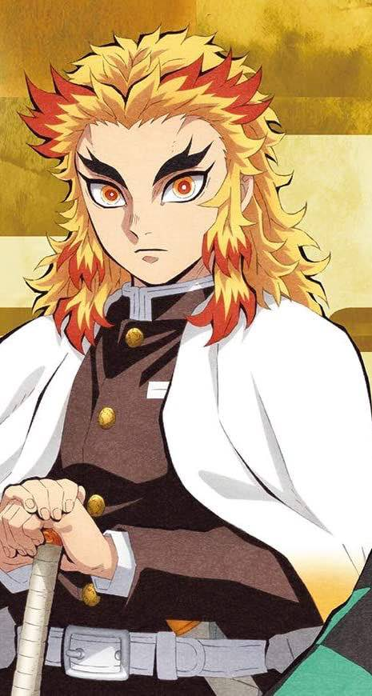

Journey
How do some trees communicate with each other?

"There is no other way to go but forward."
-
Sabito
He was regarded as a harsh mentor during his time training Tanjiro Kamado, who often highlighted his shortcomings and refused to recognize him as a true man.